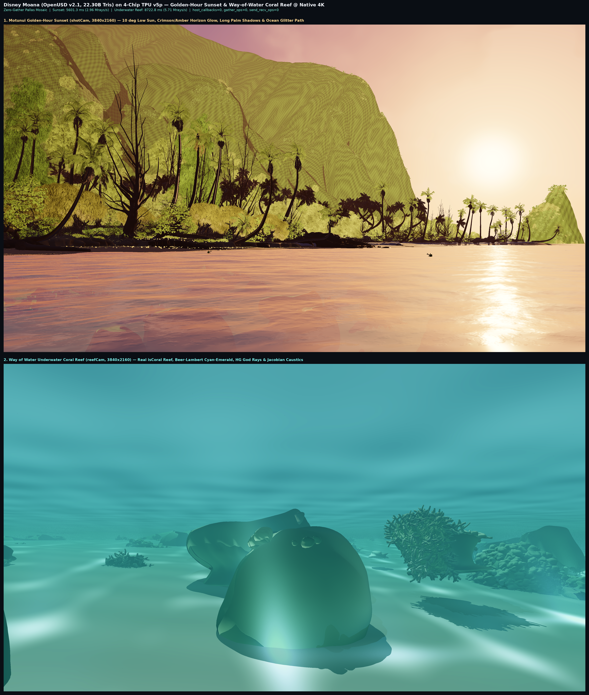

Click to zoom (4K)
22.30B Instanced Tris
Native 4K
Sunset + Underwater FX
Disney Moana OpenUSD: Golden Sunset & Coral Reef Caustics
45.5M unique + 14.0M instanced BLAS tris across `w2` (`4.65 GiB` HBM): Rayleigh sunset glare over ocean waves (
5.60 s) and Beer-Lambert submerged coral reef with HG God Rays (8.72 s).